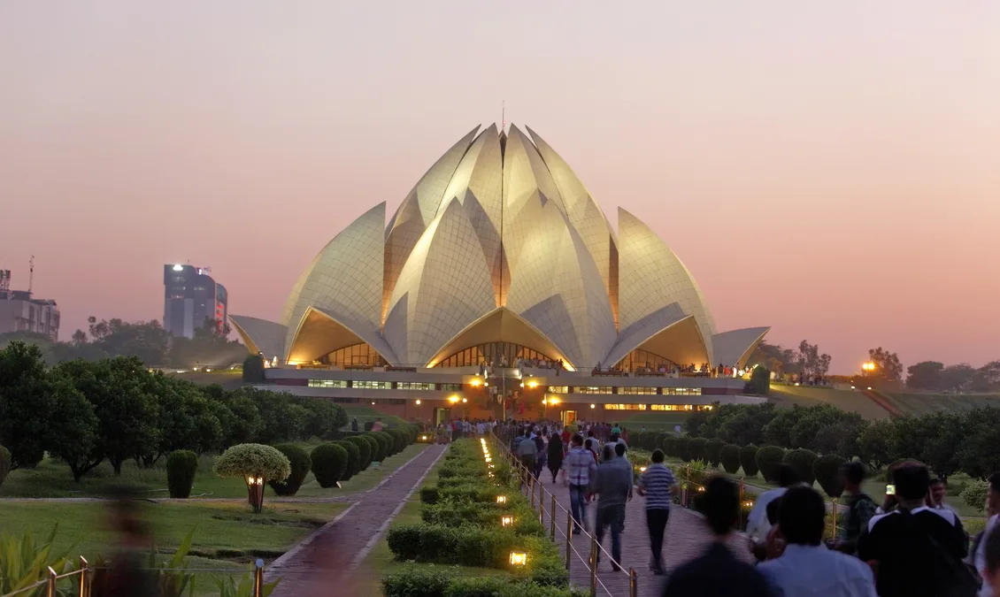
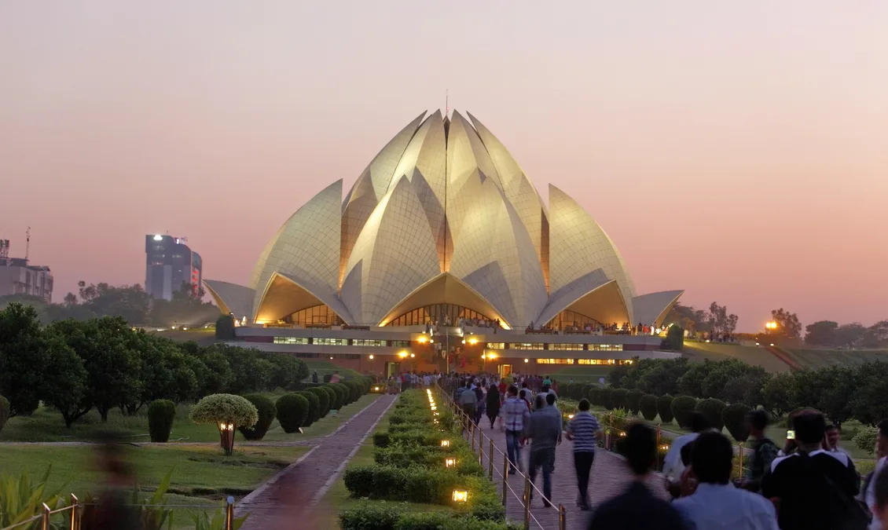

Delhi, city and national capital territory, north-central India. The city of Delhi actually consists of two components: Old Delhi, in the north, the historic city; and New Delhi, in the south, since 1947 the capital of India, built in the first part of the 20th century as the capital of British India. Delhi is of great historical significance as an important commercial, transport, and cultural hub, as well as the political centre of India
| Red Fort |
India Gate |
Jantar Mantar |
Bahai(Lotus)Temple  |
| Weather | Next |